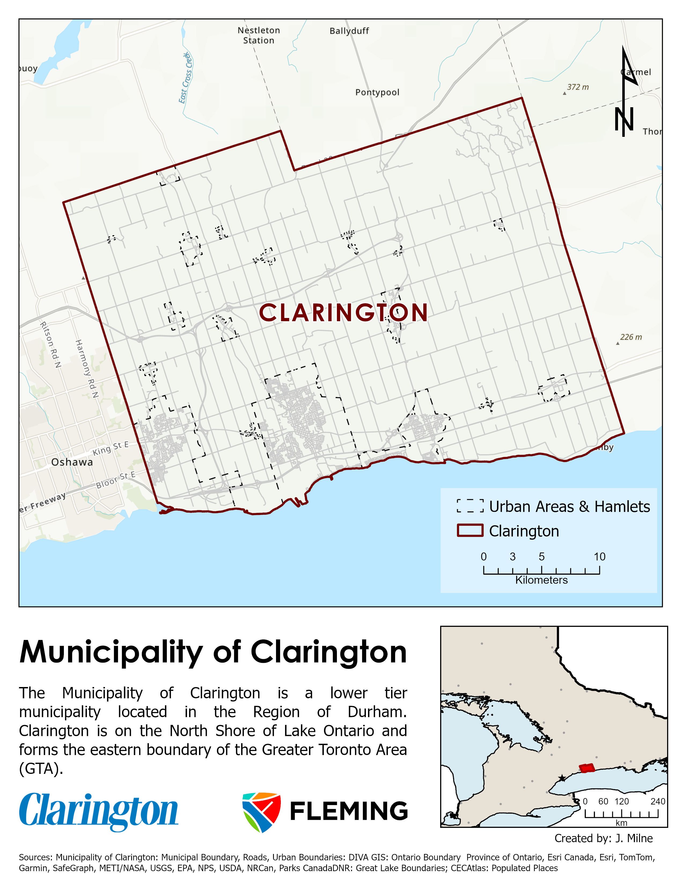

Project Overview
Toolkit for supporting municipal wide emergency response; includes an offline dynamic map, web application and hazard analysis to identify at risk areas.
- An Offline Mobile Map Package with update script.
- An updated Situational Awareness Web Application
- Risk Assessment
- Network Analysis
- Dynamic Basemap
Clients
Municipality of Clarington
Objectives
- Enable access to private municipal Geospatial data when internet connectivity is unavailable or unstable.
- The created product can be regularly updated to ensure the data is contains the latest information when it is required
- The created product should support and meet the client's needs with appropriate functions and features
- Support municipal emergency response by identifying most at-risk areas.
Study Area
